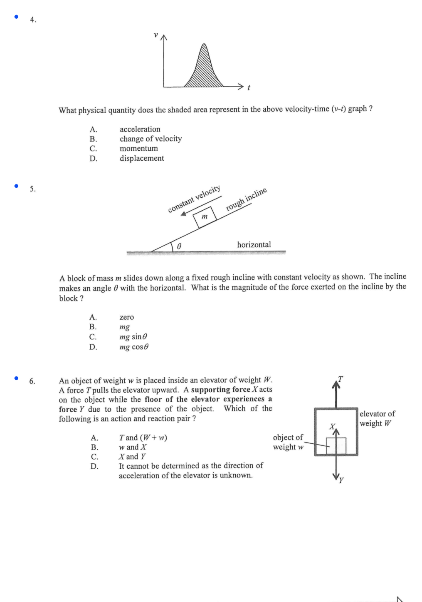
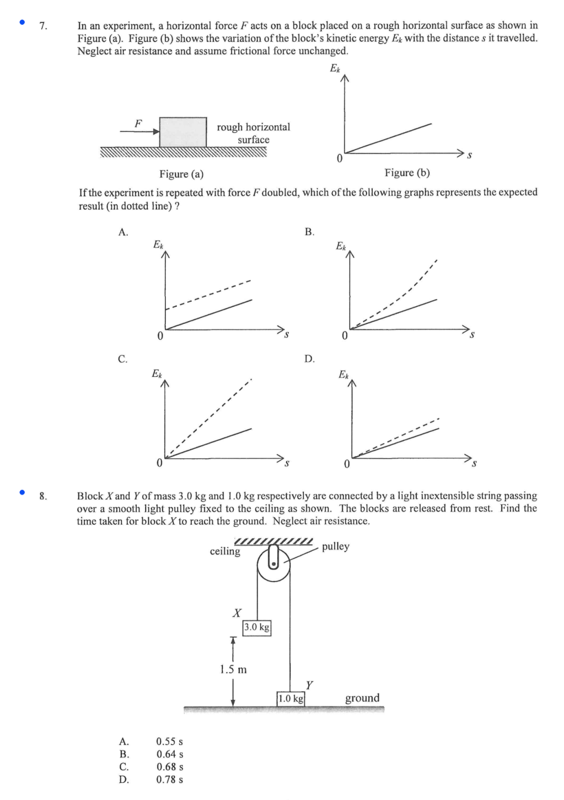
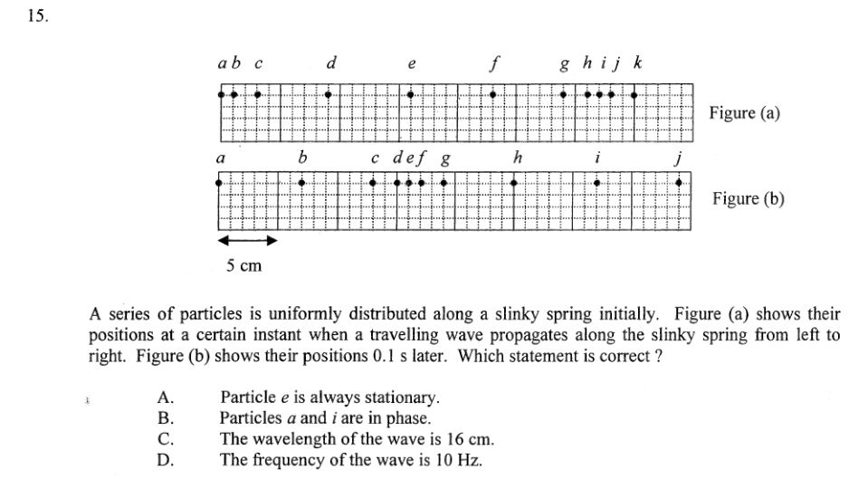
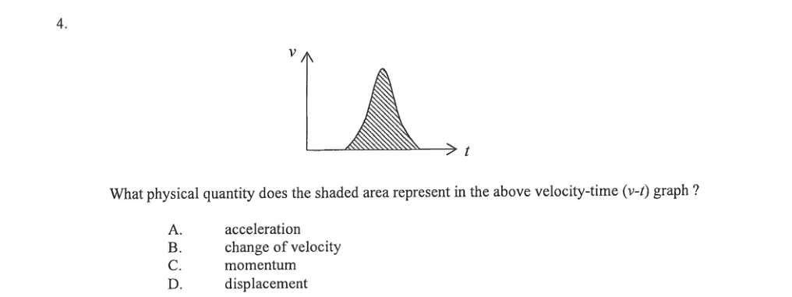
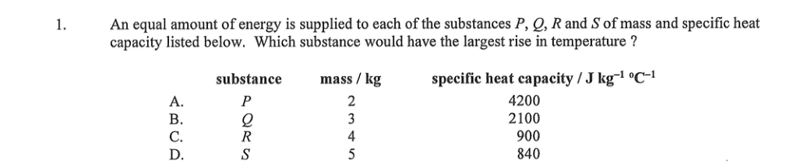
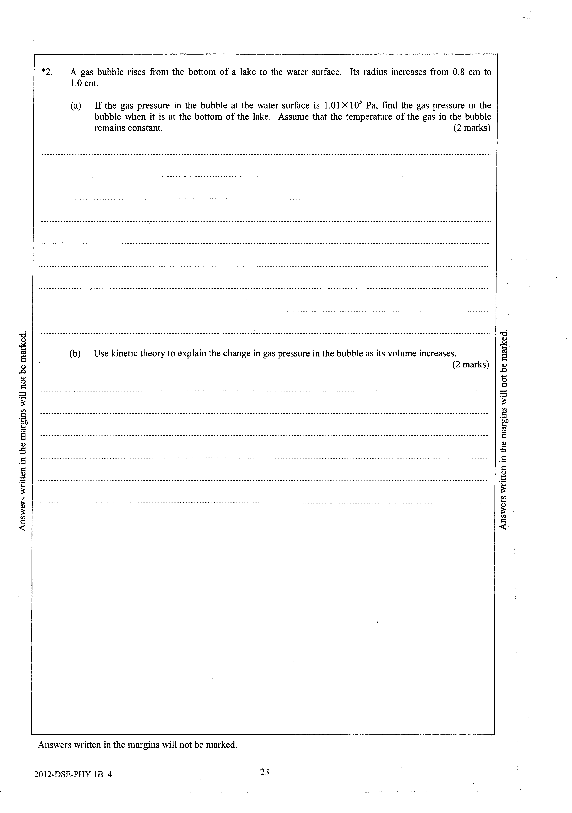
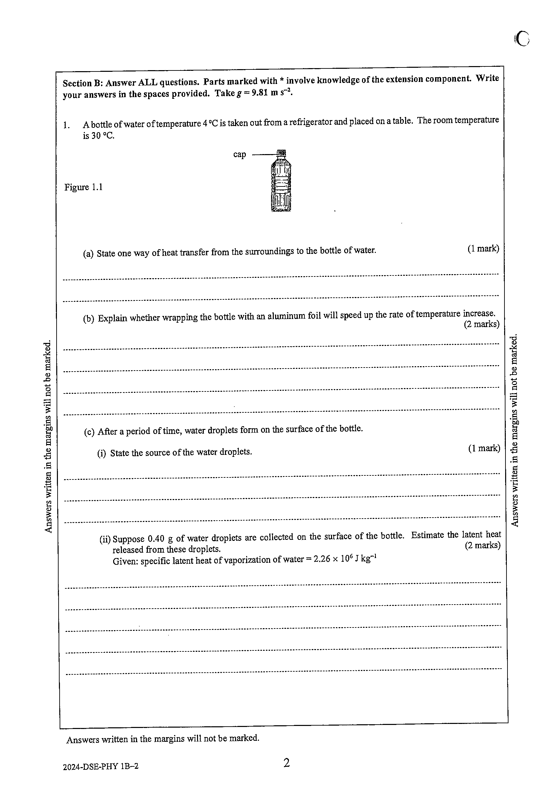
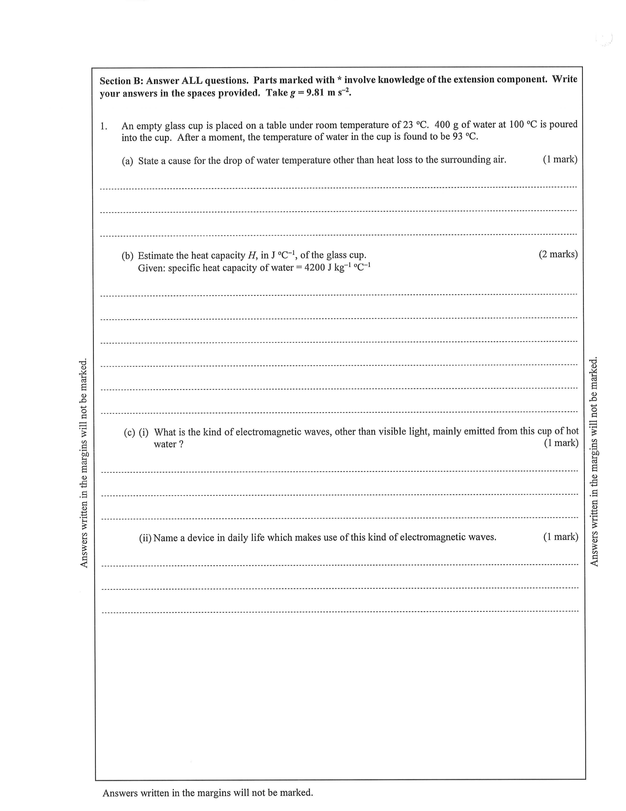
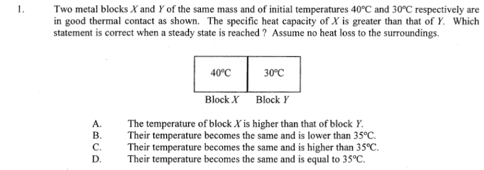

2024 MC anchor page 1
Blue dots must sit beside question numbers with a clear gap.
One command (./pipeline) turns HKDSE Physics PDFs into classified empty
question crops for MC and long questions. This page walks the stages with intermediate
artifacts, final banks, and the measured manual-tuning rate.
Day-to-day entry is ./pipeline. Scripts under scripts/ and segment are internals.
| Step | Stage | Output |
|---|---|---|
| 1. MC anchors | mc-anchors | Blue dots on each Paper 1A PDF → output/ |
| 2. MC split | mc-split | Crop empty qN.png + combined.pdf under output/ |
| 3. LQ pages | lq-pages | Export pages + starts.json under output/lq/ |
| 4. LQ crops | lq-crops | Full-question crops + questions.pdf |
| 5. LQ answers | lq-answers | Marking-scheme answer crops under ans/ |
| 6. Keys | keys | MC answer keys → classified/mc/answer_keys.json |
| 7. Classify MC | classify-mc | 27 syllabus sections (LLM if keyed, else keywords) |
| 8. Classify LQ | classify-lq | Same sections for long questions (LLM if keyed, else keywords) |
| 9. Section PDFs | section-pdfs | Per-section combined.pdf / questions.pdf |
| 10. Lavish | lavish | HTML reviews under .lavish/ |
These events count toward the <=5% manual-tuning budget, including every question listed in scripts/overrides_YYYY.json.
missing_cropmissing_classifieduncertaintiny_cropfew_year_cropsoverride_tunedmissing_answer_pngvery_tall_lqbook_order_inversion_warningLQ missing answers: 35 (often no ans PDF for 2026/pp). Override-tuned questions (counted above): 72 across 5 years.
| Override year | Questions tuned (counted) |
|---|---|
| 2015 | 3 |
| 2016 | 2 |
| 2018 | 1 |
| 2019 | 33 |
| 2020 | 33 |
Sample from output/2024-intermediate/ (regenerated for this review). Every blue dot must sit beside the question number - not on options, diagrams, or digits.


Clean screenshots cut from the paper: full stem + options, no neighboring bleed. Review PDF: output/<year>/combined.pdf.





Long questions are taller and often multi-page. Review PDF: output/lq/<year>/questions.pdf.




Crops copied into syllabus folders with section PDFs. Full interactive banks are linked below.



Open these for exhaustive section-by-section inspection (crop + classification reason + fix form).